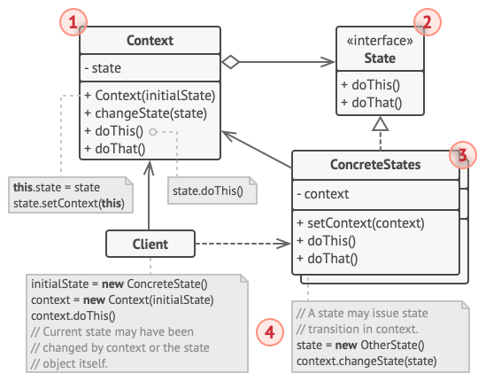

TIC 409 Advanced OOP
Session 5
👀 Observer pattern
Intent
Define a one-to-many dependency between objects so that when one object changes state, all its dependents are notified and updated automatically.
Diagram

Example
You are creating your own game. In the game, multiple system have to interact to provide the player with a full experience. In this example, our game has 3 such systems: Physics System (responsible for simulating physics like falling objects and forces ...), Audio System (plays the necessary game sounds) and Achievements system (displays a popup for the user whenever he accomplishes a new achievement)
Exercice idea based on this great "Observer" chapter in "Game Programming Patterns" free book.Questions
- Start by copying the start code and reading it. What do you think about the code structure ?
- How would you go about decoupling the different systems by using the observer pattern ?
- Let's say you want to add a UI system to display the player's health in a health bar. How hard would it be to integrate it ?
- [Event system variation] How about observing the interesting action that is happening instead of the subject it is happening on ?
- [Linked List variation] To improve program speed and avoid memory churn, you decide to use a linked list instead of a List.
🔂 State pattern
Intent
State is a behavioral design pattern that lets an object alter its behavior when its internal state changes. It appears as if the object changed its class.
Diagram
Example
You are creating a platformer game. In your game, the character can do multiple actions. The character can for example Jump (Only if he's Standing, we have to avoid Double jumps), Duck (crouch) (Only he's Standing) and Dive (If the player presses down while Jumping, the character does a Dive).
Questions
- Start by copying the start code and reading it. What do you think about the code structure ? Did you the bug with the current code ?
- How would you simplify this code by using the State pattern ? [Start by drawing the state diagram]
- [Enter & exit actions variation] How can you improve the code by using enter and exit actions ?
- [Static objects variation] How can you avoid having to create a new object for each action the user does ?
🔂 Template method pattern
Intent
Template Method is a behavioral design pattern that defines the skeleton of an algorithm in the superclass but lets subclasses override specific steps of the algorithm without changing its structure.
Diagram
Example
You are building a game. In this game, you can Orcs and Monsters. Each of those AI enemies has a different strategy for each turn.
Exercice idea based on the example in this link.Questions
- Start by copying the start code and reading it. What do you think about the code structure ? Did you the bug with the current code ?
- How would you simplify this code by using the State pattern ? [Start by drawing the state diagram]
- [Enter & exit actions variation] How can you improve the code by using enter and exit actions ?
- [Static objects variation] How can you avoid having to create a new object for each action the user does ?